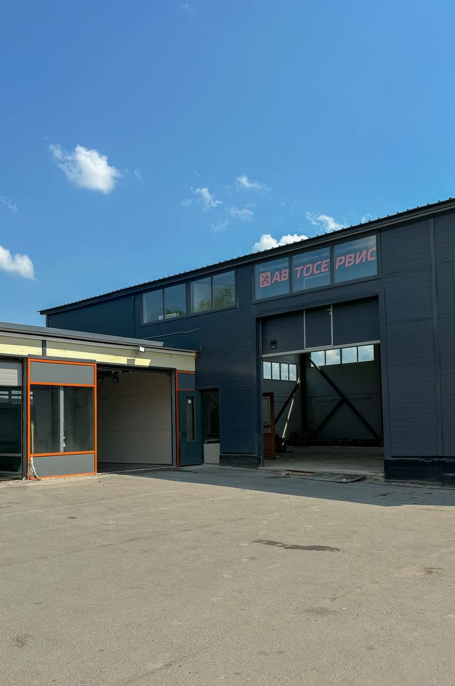

Автосервис · Автодиагностика · Замена масла · пос. Шушары
Обслуживание и ремонт автомобилей любых марок в посёлке Шушары: ходовая, двигатель, коробка, электрика и шиномонтаж.
Что делаем
Нажмите на направление, чтобы открыть цены.
Прайс
R15–R20от 2 100 ₽
| Размер колеса | Легковое авто | Джип / Кроссовер |
|---|---|---|
| R15 | 2 100 ₽ | 3 000 ₽ |
| R16 | 2 300 ₽ | 3 000 ₽ |
| R17 | 2 500 ₽ | 3 000 ₽ |
| R18 | 2 800 ₽ | 3 200 ₽ |
| R19 | 3 200 ₽ | 3 500 ₽ |
| R20 | 3 300 ₽ | 4 000 ₽ |
О сервисе
Автосервис в посёлке Шушары: обслуживаем и ремонтируем автомобили любых марок — от замены масла и шиномонтажа до ремонта двигателя и коробки передач. Работаем каждый день с 10:00 до 21:00.
Цены
Точную стоимость назовём после осмотра или диагностики машины.
Из отзывов
Работу делают в обещанный срок
Честно говорят, если замена не нужна
Без очередей, нужные запчасти бывают в наличии
Отзывы
★★★★★Яндекс КартыПлановое ТО сделали за один день, как и обещали, а мастера дали полезные советы по эксплуатации машины.
★★★★★Яндекс КартыПопросил проверить свечи — за пять минут всё открыли, посмотрели и честно сказали, что менять их пока не нужно.
★★★★★Яндекс КартыПриехал на шиномонтаж — переобули без очереди и недорого, заодно помогли с ходовой: запчасти были в наличии.
★★★★★Яндекс КартыДелают быстро, оперативно и по умеренным ценам — клиенты советуют мастеров друзьям.
Отзывы пересказаны кратко, полностью — в карточке сервиса.
Все отзывы в Яндекс Картах →Фото
Контакты
| Понедельник | 10:00–21:00 |
| Вторник | 10:00–21:00 |
| Среда | 10:00–21:00 |
| Четверг | 10:00–21:00 |
| Пятница | 10:00–21:00 |
| Суббота | 10:00–21:00 |
| Воскресенье | 10:00–21:00 |
Запись
Позвоните — подскажем по работам и запишем на удобное время.